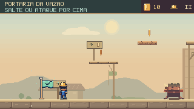
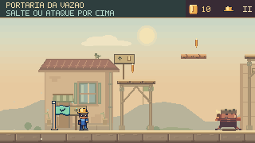

Da fachada aos apoios.
Casas, armazéns e casas de bombas escolhidos para cada trecho. Passarelas com travessas, ferragens e apoios que chegam ao terreno real. Uma nova passagem de acabamento pelos cenários das seis fases.
Subida · Um bairro junto à portaria


Casas junto às entradas, oficinas perto dos guinchos e uma casa de bombas na chegada ao aqueduto. A oficina elevada assenta na altura real da alvenaria; a portaria ganhou uma fachada própria.
Trecho de uma execução completa desde o início da fase, sem dano. Comandos de jogo, física a 60 Hz e captura a 30 fps; sem áudio. Antes e depois usam os mesmos comandos, posição do personagem, câmera e momento.

Os detalhes que ligam o cenário
Composição por trecho
Quatorze edifícios e oito árvores têm posições escolhidas nas quatro fases externas. Casas acompanham o bairro; armazéns marcam as áreas de trabalho; casas de bombas se aproximam da rede hidráulica.
Fachadas completas
Telhas, beirais, calhas, janelas recuadas, portas de correr e bases de pedra. Ventiladores giram dentro de grades fixas; toldos e pássaros têm movimento discreto, ligado ao tempo do jogo.
Encaixes e fundações
Travessas e mãos-francesas se ligam às tábuas reais. Os pilares chegam à alvenaria encontrada abaixo de cada apoio; nos canais abertos, continuam para baixo. A câmera conserva as posições de toda a estrutura.
Leitura do caminho
As estruturas ficam atrás dos atores, em tons suaves. As tábuas frágeis continuam sem armação fixa; bandeirolas se prendem à passarela. Bordas claras e água ciano mantêm a indicação de apoios e perigos.
Inspeção completa das seis fases


Verificação
As seis partidas mantiveram posições, câmera, moedas e conclusão da referência. Passaram 3.734 testes TypeScript, com zero falhas e um caso opcional ignorado, além de três testes JavaScript, validadores e build. Quinze novos testes conferem fundações, apoios sobre canais, continuidade da estrutura na câmera e animação das fachadas.
A campanha normal percorreu novamente o mapa e as oito cenas, incluindo os chefes, em nove execuções com gamepad simulado. Doze estudos de fundo no navegador conferiram repetibilidade, pausa e movimento reduzido.
Decisões e reprodução · Resultados da rodada · Paisagem distante e interiores da rodada anterior